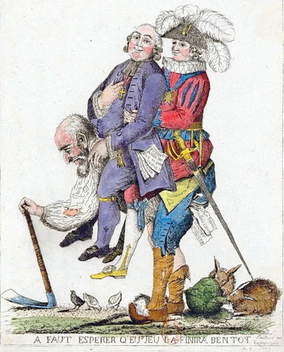
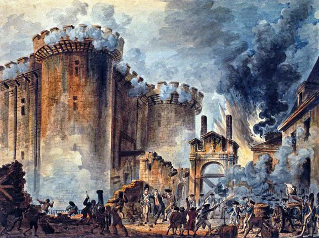

A Revolução Francesa foi motivada por uma combinação de fatores sociais, econômicos e políticos. Entre os principais motivos estão a desigualdade social, a crise financeira do Estado, a influência das ideias iluministas e a insatisfação com o regime absolutista. A população estava dividida em três estados: o clero, a nobreza e o Terceiro Estado (composto por camponeses, trabalhadores urbanos e burguesia). O Terceiro Estado enfrentava altos impostos e tinha pouca representação política, o que gerou um sentimento de injustiça e revolta. Além disso, a crise econômica agravada por guerras e gastos excessivos do governo contribuiu para a insatisfação popular, culminando na Revolução Francesa em 1789.

Com a crise financeira, o terceiro passaram a protestar, exigindo mudanças. Temendo a situação, o rei Luís XVI convocou os Estados Gerais em 1789, uma assembleia que reunia representantes dos três estados para discutir a crise. No entanto, o sistema de votação favorecia o clero e a nobreza, o que gerou insatisfação no Terceiro Estado. Em resposta, os representantes do Terceiro Estado se declararam Assembleia Nacional, dando início à Revolução Francesa e à luta por igualdade e justiça social.
A Assembleia Nacional foi a primeira fase da Revolução Francesa. Formada por deputados do Terceiro Estado (povo e burguesia), seu objetivo principal era redigir uma nova constituição. Esse contexto fez com que a população parisiense colocasse suas esperanças no Terceiro Estado. O apoio popular foi a chave do sucesso da Assembleia.
A população, ja insatisfeita com o rei, infureceu-se quando o rei se demonstrou contra a Constituição que estava sendo elaborada e ordenou que fechasse a Assembleia. Inquietos com o progresso da Assembleia, em 14 de julho de 1789, os parisienses iniciaram a tomada da Bastilha.
Após serem impedidos de entrar na sala de reuniões dos Estados Gerais, os representantes da Assembleia Nacional reuniram-se em uma quadra de jogo da péla (um esporte semelhante ao tênis) e fizeram um juramento histórico. Eles prometeram não se dispersar até que a França tivesse uma constituição.
A Tomada da Bastilha foi um evento considerado oficialmente como início da Revolução Francesa. A Bastilha era uma prisão que representava a opressão do regime absolutista. Em 14 de julho de 1789, os parisienses, revoltados com a situação política e econômica, atacaram a Bastilha em busca de armas e munições. A queda da Bastilha foi um momento crucial, pois simbolizou a resistência do povo contra a tirania e a luta por liberdade e igualdade.

A Declaração dos Direitos do Homem e do Cidadão foi um documento fundamental da Revolução Francesa, adotado em 1789. Ela estabeleceu os princípios de liberdade, igualdade e fraternidade, afirmando os direitos naturais e inalienáveis de todos os cidadãos. A declaração proclamava a liberdade de expressão, a igualdade perante a lei, o direito à propriedade e a resistência à opressão. Influenciada pela doutrina dos "direitos naturais", os direitos dos homens são tidos como universais: válidos e exigíveis a qualquer tempo e em qualquer lugar, pois permitem à própria natureza humana.
Entre 1789 e 1792, a França tentou estabelecer uma monarquia constitucional. Nesse sistema, o rei continuava governando, mas seus poderes eram limitados por uma constituição. Em 1791 foi promulgada a primeira Constituição francesa. Contudo, a desconfiança em relação a Luís XVI aumentou quando ele tentou fugir do país, sendo capturado na cidade de Varennes. Muitos franceses passaram a acreditar que o rei conspirava contra a revolução.
Em 1792, a monarquia foi oficialmente abolida e a França tornou-se uma república. Luís XVI foi acusado de traição por suas ligações com monarquias estrangeiras que pretendiam combater a revolução. Julgado pela Convenção Nacional, foi condenado à morte e executado na guilhotina em janeiro de 1793. Meses depois, sua esposa, Maria Antonieta, também foi executada.
Entre 1793 e 1794, os jacobinos, liderados por Maximilien Robespierre, assumiram o controle da revolução. Temendo ameaças internas e externas, o governo adotou medidas extremamente rígidas para proteger a república. Esse período ficou conhecido como Terror. Milhares de pessoas consideradas inimigas da revolução foram presas e executadas na guilhotina. Apesar de algumas reformas sociais importantes, como o controle de preços e a abolição da escravidão nas colônias francesas, a violência gerou grande insatisfação.
Em 1794, Robespierre foi preso e executado, encerrando o Período do Terror. A partir daí, grupos mais moderados assumiram o poder em um processo conhecido como Reação Termidoriana. Em 1795 foi criado o Diretório, um governo composto por cinco diretores. Apesar da tentativa de estabilizar o país, o Diretório enfrentou corrupção, crises econômicas e constantes conflitos políticos, perdendo apoio popular.
Em 1799, Napoleão Bonaparte, um general de sucesso, aproveitou a instabilidade do Diretório para realizar um golpe de estado. Ele estabeleceu o Consulado, concentrando o poder em suas mãos. Em 1804, Napoleão se proclamou imperador, encerrando oficialmente a Revolução Francesa. Apesar de ter implementado algumas reformas administrativas e legais, como o Código Napoleônico, seu governo também foi marcado por guerras e conquistas territoriais que afetaram a Europa por anos.
1. Em que ano começou a Revolução Francesa?
2. Qual prisão foi tomada em 14 de julho de 1789?
3. Quem era o rei da França?